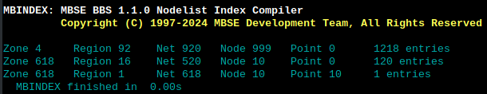

Setting up a FTN point node is a relatively simple task. Follow these steps in order to set up a point.
MBSE uses the "Boss" type of pointlist as described in FTS-5002 or "Pointlist Formats". From that document:
This is an extension of the St. Louis nodelist format, the list of points is distributed separately from the nodelist. The list contains of one or more lines of the format: Boss,<zone>:<net>/<node>[,[<additional fields>]] Where "<additional fields>" may be a copy of fields 3-8 of the corresponding nodelist entry of the boss node. The second comma and following fields are however optional and are usually omitted. Current node/pointlist parsers ignore the additional fields but some pointlist keepers include the second comma anyway just to be on the safe side. Directly below the 'Boss' line is a list of the points entered as if they were nodes. The first field of a point entry must be empty. The telephone number field may contain the actual number if the point is online or "-Unpublished-" if it is not.
Important: If you use multiple AKAs within a network, select the one that you use for your echomail. For example, in Micronet, my FTN network, I fly several AKAs but the mail is handled by 618:618/1. So all points will be 618:618/1.nnn.
For this example, I create a pointlist called minpoint.999 in /opt/mbse/var/nodelist as an example. It is customary to name a static pointlist with the extension of .999.
My minpoint.999:
Boss,618:618/1
10,Tiny's_Mailbox,Toronto_ON,Shawn_Highfield,-Unpublished-,300,MO,INA:t1ny.duckdns.org,IBN
Note that the pointlist uses the same format as the standard St. Louis format nodelist. Points should always be set to MO ("mail only").
Save that file and enter mbsetup. Select option 2 then the network you are setting up that point in. Select the merge list number you will be using. In this example, I'll be using "Merge list #1" or option 6. You will need to enter the pointlist name in the first field, which is "minpoint" here, and the AKA you will be using, "618:618/1".
After you save that data, drop to the command shell and run mbindex. You should see something like the following:

Note at the bottom of the list, you'll see the point address(es) being compiled in.